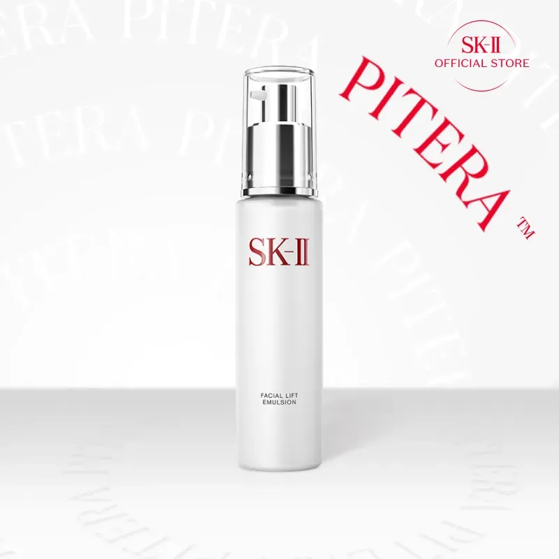

วิเคราะห์ข้อมูลจากรีวิวจริงของ Jane Soraya Beauty และแหล่งข้อมูลอื่น เพื่อพิสูจน์ว่า SK-II น้ำตบพิเทร่า™ คุ้มค่าแก่การลงทุนหรือไม่

บทสรุปความงามที่คุณต้องลอง
เลือกสินค้าที่เหมาะกับคุณที่สุดได้เลยที่นี่